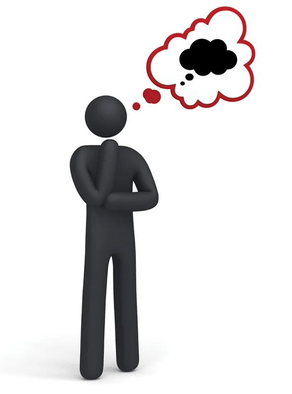

Hello there our beloved readers. We hope that you have been keeping well.
We are so excited to start our new season where we will be learning about entrepreneurship and build our entrepreneurial skills.
But before we start our self made journey it is important for us to understand what is money and how to appreciate it. Money is a medium of exchange in the form of coins and banknotes. Money can be good if you are good custodian or it can control you and make you a bad person. Therefore it is important to find a balance.
As human beings we have different wants and needs in our daily life. Wants are desires we have to possess something while needs are necessities in our daily lives. We know the basic needs are food, shelter and clothing. These are the things that a person needs in order to survive. As we start a journey to appreciate and save money we therefore needs to identify the needs and wants in our lives.
Is it possible to start making money at our young age? How do we do that? Yes it is possible to earn money at our young age. We need to create a habit of earning the money that we have instead of demanding it from our parents or guardians. We can help at home and do some chores in order to earn some money from our parents like washing their vehicles. We can also start small businesses in neighborhoods like selling popcorns or lemonades.
We were challenged by our teachers to create a business plan or come up with business ideas of what we can do or start doing. I am very excited to see the ideas some of my friends come up with.
Our guiding verse was from the book of Luke 13;18 -19 that says ” What is the Kingdom of God like? What shall I compare it to? It is like a mustard seed, which a man took and planted in his garden. It grew and became a tree, and the birds perched in its branches. This verse encourages us not to despise our small beginnings. It may look small but it can grow and become something big.
At amazing kids our goal is to create wholesome learning experiences. We would like to nature the idea of appreciating and earning money at a young age. As well as growing a saving culture with the kids. Join us every Saturday in this journey.